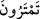

tahsîs için değildir. Zîrâ insan Allah’tan korkmasa ve O’na itâat etmese de ecel-i
müsemmâsı her hâl ü kârda bu mertebeye ulaşmaz. Çünkü Allah onun iyi ve kötü işden
hangi fiile yöneleceğini bilir ve ecelini ona göre tayin eder. Allah’ın ezelî ilminde
mukadder olan onun muayyen ecelidir.
Bizler ise Allah’ın ezelî ilminde mâlum olan şeylere vâkıf değiliz. Kulun hangi amele
yöneleceğini bilemeyiz. Bu sebeple bir insanın tabii ölümle mi öleceğini, yoksa işlediği
hayırlı amellerle ecelinin tehir mi edileceğini kestiremeyiz. Ancak o, yapması muhtemel
olan iki işten birini tercih eder de ölümü vukû bulursa, işte o zaman o kul için tayin
olunan ecel budur. Şu halde tereddüt bize göredir. Yoksa, Allah’ın takdirinde tereddüt
yoktur. Aksi durumda Allah’ın kulun hangi amele yöneleceğini bilmemesi gerekirdi ki,
bu da muhaldir.
Nitekim Cenab-ı Hak ezelî ilmi ile îman etmeyeceğini bildiği halde kâfire hitaben
şöyle buyurur: “Müslüman ol ki cennete giresin, küfürde ısrar etme cehenneme
girmeyesin.” Buradaki emir ve nehiy onun zâhirde itâat mi, yoksa muhalefet mi
edeceğini ortaya koymak içindir. Nitekim yanında bulunan topluluğa hizmetçisinin söz
dinlemez olduğunu göstermek isteyen kişi, yapmayacağını bildiği halde ona bir işi
emreder. İşte hazır bulunan ve hizmetçinin durumundan şüphelenen kimseler için onun
itâatsiz olduğunun bilgisi ancak sâhibinin emri ile hâsıl olur. Hizmetçinin itâat edeceğini
bilmesi de aynıdır. Kulların ihtiyarî fiilleri hakkında ilâhî mukadderâtın hepsi bu
kabildendir.
Şu halde açıkça ortaya çıktı ki tereddüt bize göredir, yoksa Allah’ın ilmine göre değil.
Ancak Allah’ın ilminde var olan bir hususu haber vererek kullarını ona muttali etmesi
müstesnâ. Nitekim Hz. Peygamber (s.a.)’i zamanındaki bazı kâfirlerin durumları
hakkında şöyle bilgilendirmişti: “İnkâr edenlere gelince, onları uyarsan da
uyarmasan da onlar için birdir, onlar inanmazlar. Allah, onların, kalplerini ve
kulaklarını mühürlemiştir, gözlerine perde inmiştir. Onlar için büyük bir azab
vardır.” (el-Bakara, 2/6-7) İşte bu onların asla îman etmeyeceklerine dair Allah’ın
ilminde var olan hususun haber verilmesidir. Bu konuda söylenecek son söz budur. Esas
doğru bilgi, herşeyin sahibi, her şeyi bilen Allah katındadır.
Ve “Böyle iken siz hâlâ şüphe ediyorsunuz.” Allah’ın sizin de, atalarınızın da
yaratıcısı olduğu ve eceliniz gelinceye kadar sizi yaşattığı açıkça ortaya çıktığı halde
yeniden diriltme hakkındaki şüpheye düşmeniz normal değildir. Maddeleri ilk olarak
yaratmaya, onları bir araya getirmeye, onlara önceden benzeri olmadan hayat vermeye
ve dilediği kadar yaşatmaya kadir olan Allah, bu maddeleri tekrar bir araya getirmeye
ve diriltmeye daha da kadirdir.
Âyetteki “
” fiilinin aslı olan “Mirye” kelimesi, şüphe ile artan tereddüt
demektir. Devenin memesini meshederek sütünü çoğaltmaya çalışmak yani memeden süt
çıkarmaya çalışmak için de bu kelime kullanılır.
Ebussuûd Efendi der ki: “Öldüğümüz, toprak ve kemik haline geldiğimiz zaman
mı diriltileceğiz?” (el-Mü’minûn 23/82) âyeti ve benzeri âyetlerde belirtildiği gibi